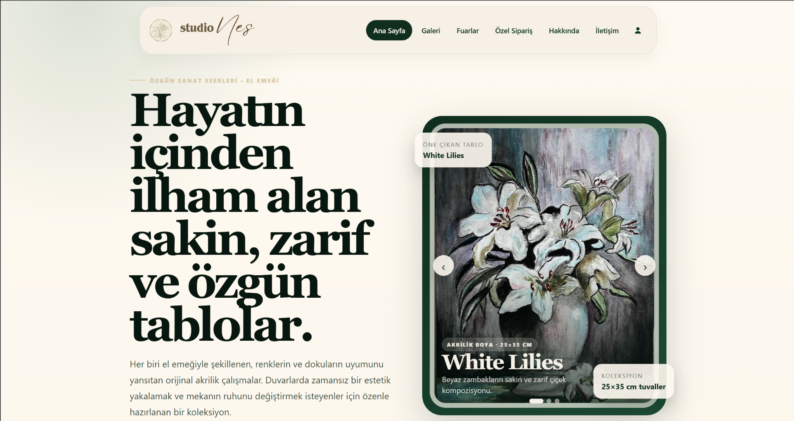
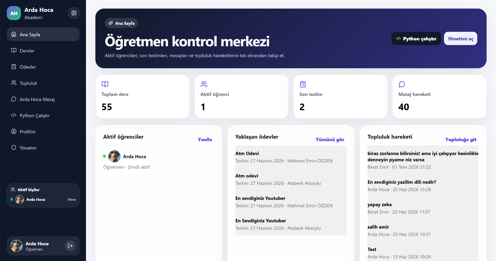

← Ana sayfaya dön
Tüm örnek web siteleri


ARD Digital portfolyosundaki tüm işler.
Burada hazırlanan örnek web sitelerini toplu şekilde görebilir, kartlara tıklayarak her projenin detay sayfasına geçebilirsiniz.

Sanatçı portfolyosu / galeri sitesi
Studio Nes
Tablo, galeri, özel sipariş ve iletişim alanlarını tek yerde toplayan; görsel ağırlıklı, zarif ve yönetilebilir sanatçı web sitesi.
Detayları gör →
Premium marka vitrini / ABD pazarı
Ironform Studio
Low-poly metal heykel üretimini Amerika pazarına uygun, güven veren ve teklif almaya yönlendiren modern bir marka vitriniyle anlatan site.
Detayları gör →
Kurumsal site / hizmet tanıtımı
Skytek Teknoloji
Zipline, zipcoaster, dev salıncak ve macera parkı sistemlerini ayrı hizmet detaylarıyla anlatan kurumsal web sitesi yapısı.
Detayları gör →
Eğitim platformu / yönetim paneli
Arda Hoca Akademi
Öğretmen, ders, ödev, öğrenci ve mesaj akışını tek panelde toplayan; eğitim tarafında düzenli ve modern bir kontrol sistemi sunan platform arayüzü.
Detayları gör →